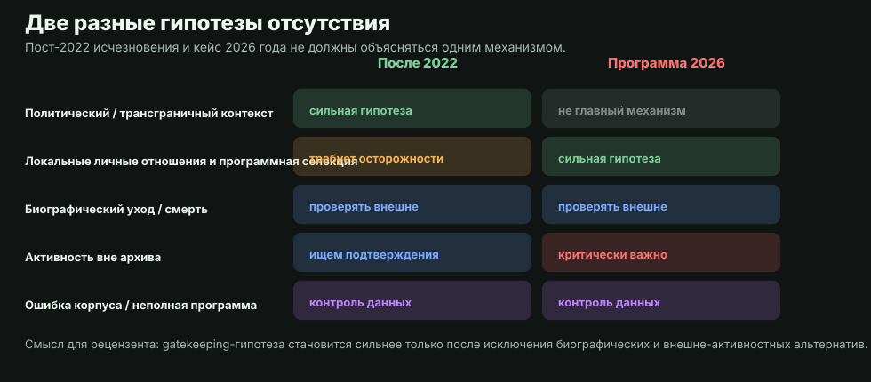
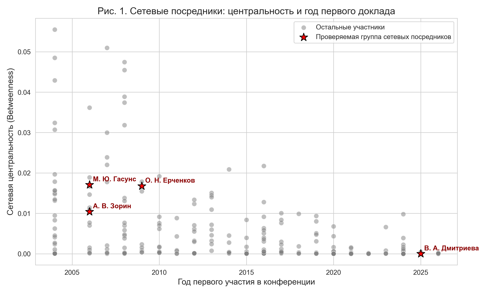
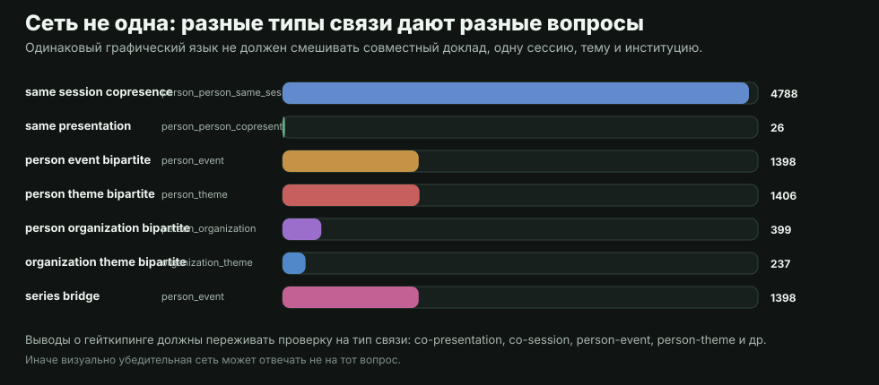

Nalanda: a positive model of admission control
In classical and popular usage, a gatekeeper is not necessarily a censor. In the Nalanda example, the gatekeeper is described as an intellectual threshold: a role that protects entry into a demanding learned tradition, checks preparation, and thereby maintains communal standards (discussion of gatekeepers at Nalanda University).
For peer review, this positive model is a useful control. Legitimate gatekeeping is possible when criteria are visible, proportional to scholarly quality, and open to strong but unconventional submissions. The illegitimate version begins where standards are replaced by closed access, nepotism, favoritism, or penalties for peripheral status and missing institutional affiliation.
Within the Nalanda tradition itself the threshold is benevolent: in the accounts preserved by the pilgrims (Xuanzang, Yijing), admission to the monastery ran through a disputation at the gate - a contest of arguments, not of forms, acquaintances, or affiliations - and the temple dvarapalas, guardians of the threshold, are fierce only from the outside and hospitable within. This benevolent model serves here as a yardstick: a modern practice in which admission is replaced by segregation by acquaintance, bureaucratic delay, and pettifogging under a formally open call contradicts not the height of the standard but the dvarapala frame itself - the threshold remains, the benevolence has evaporated. As everywhere on this page, the contrast of models is structural, not a personal accusation.
Where the positive function may disappear
In the stronger but still testable version of the hypothesis, the senior generation is not merely defending standards; it may be excluding unusually visible middle-generation participants after they have already accumulated their own network connectivity and methodological independence.
- Nepotism and favoritism: if programme composition is better explained by proximity to the organizing circle than by proposal quality, the positive function of gatekeeping weakens.
- Unconventional methods: corpus data and digital methods may be filtered not because they are unscientific, but because the committee is unable or unwilling to evaluate their value; the Gasuns case should be tested in this frame.
- Periphery and affiliation: a researcher without a recognizable institutional shield may be vulnerable for reasons unrelated to scholarly quality.
- Pseudoscience as a weak explanation: if the submission procedure is hidden and external participants do not know how to enter the programme, filtering pseudoscience is unlikely to be the main selection mechanism.
- Double standard of rigor: a high scholarly bar cannot justify selection if senior or in-group participants are forgiven declining quality.
- Methodological purity: this may be a strong principle, but it is not proof by itself; even graduates of the Faculty of Asian and African Studies at St Petersburg University and other strong schools may violate their own methodological standards.
From hierarchy to distributed mediation
The archive allows us to discuss a generational shift: some of the field's connectivity is produced not only by vertical institutions, but also by horizontal network mediators.
Network mediators connect otherwise weakly linked clusters, initiate horizontal collaboration, and build venues outside a single RAS or classical-university affiliation.
Theoretical frame
- Field and symbolic capital: a conference programme is not just a schedule; it is also a mechanism of public recognition.
- Boundary work: programme selection may appear as disciplinary boundary maintenance while producing exclusion-like effects.
- Network communities: horizontal groups may remain active outside one venue and become less dependent on a local centre.
What is being tested
The 2026 case should not be mixed with post-2022 absences. Post-2022 absence may reflect the political context around Russia, emigration from Russia, or inability to participate from unfriendly countries. The 2026 case tests a different mechanism: local programme selection and personal relations inside the field.

Visualization and evidence
Betweenness centrality is used here not as a quality score, but as a measure of how often a participant links otherwise separate parts of the observed conference network.

Several networks, not one
Joint presentation, same session, same topic, same event, and same institution answer different questions. The argument is stronger when these layers are kept separate.

Measured centrality and bridges (H2411)
The tables below are recomputed from the live archive on three non-mixed layers (collaboration / session / event) plus people observed in both series. Recipe: python tools/compute_network_centrality.py.
Betweenness is a structural connectivity score, not scholarly quality. Edge types are never mixed into one undifferentiated network (see analytics_output/network_robustness_checks.csv). Recipe: python tools/compute_network_centrality.py.
Top session-layer betweenness
| Scholar | Betweenness | Degree | Series |
|---|---|---|---|
| Рыжакова Светлана Игоревна | 0.061717 | 101 | both |
| Цветкова Светлана Олеговна | 0.051042 | 99 | both |
| Васильков Ярослав Владимирович | 0.04761 | 97 | both |
| Лысенко Виктория Георгиевна | 0.046646 | 96 | both |
| Корнеева Наталья Афанасьевна | 0.041243 | 90 | both |
| Дробышев Юлий Игорьевич | 0.04071 | 42 | roerich_only |
| Тавастшерна Сергей Сергеевич | 0.037221 | 99 | both |
| Лидова Наталья Ростиславовна | 0.032 | 70 | both |
| Александрова Наталия Владимировна | 0.031354 | 84 | both |
| Шомахмадов Сафарали Хайбуллоевич | 0.026763 | 62 | zograf_only |
Zograf ↔ Roerich bridges (both series)
| Scholar | Zograf | Roerich | Event betweenness | Co-talk degree |
|---|---|---|---|---|
| Тавастшерна Сергей Сергеевич | 16 | 12 | 0.036219 | 0 |
| Корнеева Наталья Афанасьевна | 15 | 14 | 0.03173 | 0 |
| Цветкова Светлана Олеговна | 15 | 12 | 0.029951 | 0 |
| Александрова Наталия Владимировна | 12 | 15 | 0.02737 | 0 |
| Лысенко Виктория Георгиевна | 19 | 6 | 0.026823 | 0 |
| Рыжакова Светлана Игоревна | 22 | 5 | 0.024368 | 0 |
| Лидова Наталья Ростиславовна | 8 | 8 | 0.020596 | 0 |
| Васильков Ярослав Владимирович | 19 | 1 | 0.015601 | 0 |
| Дубянский Александр Михайлович | 10 | 11 | 0.012754 | 0 |
| Мехакян Арег Гайкович | 5 | 15 | 0.012322 | 0 |
Collaboration degree (co-presentation partners)
| Scholar | Partners | Betweenness | Series |
|---|---|---|---|
| Краснодембская Нина Георгиевна | 2 | 4.7e-05 | zograf_only |
| Соболева Елена Станиславовна | 2 | 4.7e-05 | zograf_only |
| Курочкин Александр Юрьевич | 2 | 2.3e-05 | zograf_only |
| Псху Рузана Владимировна | 1 | 0.0 | zograf_only |
| Вечерина Ольга Павловна | 1 | 0.0 | both |
| Пахомов Сергей Владимирович | 1 | 0.0 | zograf_only |
| Островская Елена Петровна | 1 | 0.0 | zograf_only |
| Котин Игорь Юрьевич | 1 | 0.0 | zograf_only |
| Зорин Алексей Валерьевич | 1 | 0.0 | zograf_only |
| Демченко Максим Борисович | 1 | 0.0 | zograf_only |
Source CSVs: network_centrality_session.csv, network_centrality_collaboration.csv, network_series_bridges.csv, network_centrality_summary.json (H2411).
Documented application-stage episodes: 2020 and 2025
Programmes record the outcome of selection, but not the submissions or the stated reasons for rejection. The archive's author holds two committee letters - a rare case where the application stage becomes observable. Signatories are named because their signatures stand on documents held by the author; the wording is paraphrased, not quoted verbatim.
- Roerich Readings, December 2020. Submission "Novoe v sanskritskoy kompyuternoy lingvistike" ("New in Sanskrit computational linguistics"; abstract dated 11.12.2020) for the year theme "Text and sense-generation in culture". Rejection of 13.12.2020, signed by V. V. Vertogradova on behalf of the committee, with the rationale: non-correspondence to the conference problematic, which has "not an applied but a fundamental character" (paraphrase). Observable context: applied topics constitute 4-8% of both series' programmes, so an "applied character" rationale is not grounded in the observed thematic composition of the programmes; the same author presented in this series in 2019 and returned to it in 2024.
- Dubyanskiy Readings, 2025 (5th conference, HSE). Submission "A.A. Zaliznyak as a Sanskrit Scholar" (29.06.2025) - history and methodology of Indology, a declared category of the series since its first edition. Rejection of 11.08.2025, signed by T. A. Dubyanskaya on behalf of the committee, without a thematic rationale: a record number of submissions under limited programme time required a stricter selection.
The 2021 contrast is telling: at the first Dubyanskiy Readings (18-20.11.2021, RUDN, the era of organizer R. V. Pskhu) the same author with a talk of the same class - "The Sanskrit Triptych of V. A. Kochergina", section "History of Indology" - was accepted. One series, one topic class, one author; between 2021 and 2025 the variable is the composition of the organizing committee.
| Venue / era | Year | Submission or talk | Topic class | Outcome |
|---|---|---|---|---|
| Dubyanskiy, Pskhu era (RUDN) | 2021 | "The Sanskrit Triptych of V. A. Kochergina" | history of Indology | accepted |
| Dubyanskiy, Dubyanskaya era (HSE) | 2025 | "A.A. Zaliznyak as a Sanskrit Scholar" | history of Indology | rejected (volume of submissions) |
| Roerich Readings | 2005 | "From the history of Nagari typefaces" (programme - in correspondence with the organizer) | history of Indology / book culture | accepted (after a "too young" rejection; supported by V. M. Alpatov) |
| Roerich Readings | 2019 | "Understanding and writing the term 'Sanskrit'" | Sanskrit studies | accepted |
| Roerich Readings | 2020 | "New in Sanskrit computational linguistics" | Sanskrit studies / digital methods | rejected ("applied character") |
| Roerich Readings | 2024 | "Principles of name-chains in the Vishnusahasranama" | textology | accepted |
| Zograf Readings | 2026 | - (synchronous absence of a pool, see the 2026 case) | mixed | absent from the programme |
The Zograf 2026 row is an observed absence, not a submission; R. V. Pskhu's role in the 2026 selection reflects the author's knowledge and is not confirmed by public documents. The table as a whole proves no motive in any case: it records an observed configuration in which the outcome of a same-class submission by the same author correlates more strongly with the venue and the composition of the committee than with the topic class or with the thematic rationale used in rejections. This configuration is compatible with a selective-filter hypothesis and incompatible with a systematic thematic filter at the programme level.
The early rows have a documented prehistory. The author's 2005 appearance at the Roerich Readings ("From the history of Nagari typefaces"; the programme of 28-29.11.2005 is preserved in correspondence with the organizer) was preceded by a rejection with the rationale "too young" (per the author's account; the 2004 submission is mentioned in the 2005 letter). The 2005 submission was supported by V. M. Alpatov - on the recommendation of E. P. Chelyshev; in the letter of 24.11.2005 the author conveys his assessment: the work is informative, and there are no reasons not to admit it. The series' public online archive begins in 2007, so the 2005 programme entered this archive's corpus through that correspondence (23 presentations; corpus amendment of 03.10.2026, classified manually under the closed vocabularies). The caveat cuts both ways: a field that rejects submissions by age and by "applied character" also contains senior colleagues ready to vouch for a young peripheral researcher - the mechanism opposite to filtering operates inside the same field. This is a further argument for reading the page structurally rather than as a portrait of individuals.
The 2026 case
The 2026 case tests the synchronous absence of an active group: M. Gasuns, O. Erchenkov, V. Dmitrieva, A. Zorin, and Sizova as an additional identity-check row. Names are used for source auditability; the interpretation remains structural rather than personal.
The null hypothesis is simple: these authors may have reduced activity, shifted topics, not applied, or left the field. The institutional-filter hypothesis becomes stronger only if external sources show continuing activity while the programme loses a connective group.
A cautious peer-reviewable formula: "the observed configuration is compatible with an institutional-filter hypothesis, but does not prove motive; stronger claims require external evidence of continued activity and documented testing of alternative explanations."
Known extra-network relations that cannot be inferred from co-presentations or sessions are stored on a separate reviewable page. Audience, naming, and claim-level choices are recorded in the editorial meta-document.